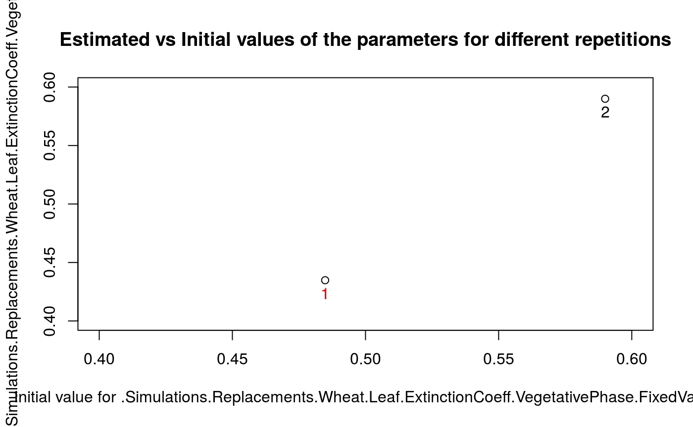
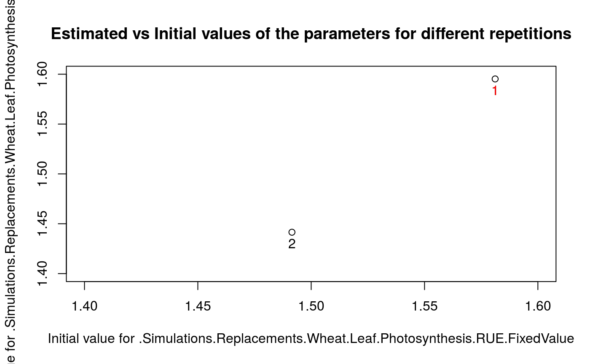
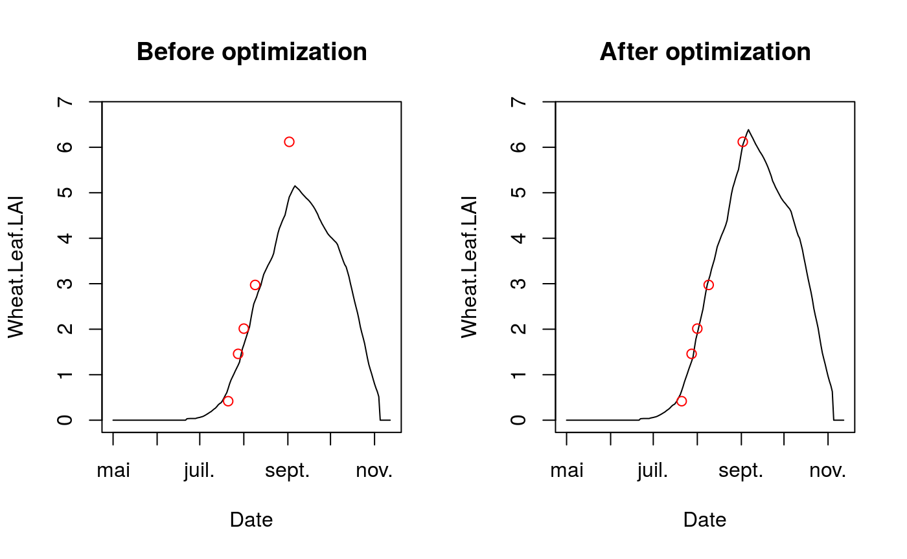

vignettes/ApsimX_parameter_estimation_simple_case.Rmd
ApsimX_parameter_estimation_simple_case.RmdA simple parameter estimation with a single situation, a single observed variable and 2 estimated parameters, just to illustrate how to use the package.
TODO : Data comes from a … experiment (see description in apsimx file / interface…).
The parameter estimation is performed using the Nelder-Meade simplex method implemented in the nloptr package.
To regulate the number of simulations (and thus the duration of execution), reduce the number of repetition of the minimization and/or the maximum number of evaluation (see section “Set options for the parameter estimation method”).
The execution of this Rmarkdown document requires the path to the ApsimX model. By default it uses the one calculated in this document header stored in params$apsimx_file
## [1] "/usr/local/bin/Models"If you want to change the value of this parameter you may use Knit, then “Knit with parameters” or set it manually in a chunk (apsimx_path <- path/to/exe/file) .
knitr::opts_chunk$set(echo = TRUE)
# Install and load the needed libraries
if(!require("ApsimOnR")){
devtools::install_github("ApsimOnR")
library("ApsiOnR")
}
if(!require("SticsOptimizR")){
devtools::install_github("SticsRPacks/SticsOptimizR")
library("SticsOptimizR")
}
if(!require("dplyr")){
install.packages("dplyr",repos="http://cran.irsn.fr")
library("dplyr")
}
if(!require("nloptr")){
install.packages("nloptr",repos="http://cran.irsn.fr")
library("nloptr")
}
if(!require("DiceDesign")){
install.packages("DiceDesign",repos="http://cran.irsn.fr")
library("DiceDesign")
}
if(!require("doParallel")){
install.packages("doParallel",repos="http://cran.irsn.fr")
library("doParallel")
}In this case, the argument param_values of the wrapper is not set: the values of the model input parameters are all read in the model input files.
# Set the model options (see '? apsimx_wrapper_options' for details)
#
# Normally apsimx_path has been set in Rmarkdown doc header (see params list).
# But it can be overrided here, or using the feature "Knit with parameters"
# For a linux OS : apsimx_path="/usr/local/bin/Models"
# For a Windows OS: apsimx_path="C:/path/to/apsimx/bin/Models.exe"
apsimx_path <- params$apsimx_path
files_path <- system.file(file.path("extdata","apsimx_files"),package = "ApsimOnR")
apsimx_file <- file.path(files_path, "template.apsimx")
# Setting met files path
met_files_path <- files_path
# Setting observed data files path
obs_files_path <- files_path
# Setting sqlite db tables names
predicted_table_name <- "DailyReport"
observed_table_name <- "Observed"
model_options=apsimx_wrapper_options(apsimx_path = apsimx_path,
apsimx_file = apsimx_file,
variable_names = var_name,
predicted_table_name = predicted_table_name,
met_files_path = met_files_path,
observed_table_name = observed_table_name,
obs_files_path = obs_files_path)
# Run the model (on all situations found in the apsimx_file)
sim_before_optim=apsimx_wrapper(model_options=model_options)We only keep observations for situation sit_name and variable var_name (obs_list define the list of situations and variables that will be used in the parameter estimation process).
# At the moment, observed data are read from the db file after the first simulation ran before optimization.
#But they may be loaded using the original xlsx data file (from the files_path)
obs_list <- read_apsimx_output(sim_before_optim$db_file_name,
model_options$observed_table_name,
model_options$variable_names,
names(sim_before_optim$sim_list))
sit_name="GattonRowSpacingRowSpace25cm"
obs_list=obs_list[sit_name]
names(obs_list) <- sit_name
obs_list## $GattonRowSpacingRowSpace25cm
## Wheat.Leaf.LAI Date
## 1 0.4181851 2011-07-21
## 2 1.4584748 2011-07-28
## 3 2.0131426 2011-08-01
## 4 2.9735135 2011-08-09
## 5 6.1201040 2011-09-02
## 6 NA 2011-11-04prior_information determines the list of parameters that will be estimated in the parameter estimation process and associated bounds information (only uniform distributions for the moment, others will come soon).
# 2 parameters here: ExtinctionCoeff and RUE, of prior distributions U([0.4,0.6]) and U([1.4,1.6])
# This is also used to set the list of parameters to estimate
prior_information <-
list(lb=c(.Simulations.Replacements.Wheat.Leaf.ExtinctionCoeff.VegetativePhase.FixedValue=0.4,
.Simulations.Replacements.Wheat.Leaf.Photosynthesis.RUE.FixedValue=1.4),
ub=c(.Simulations.Replacements.Wheat.Leaf.ExtinctionCoeff.VegetativePhase.FixedValue=0.6,
.Simulations.Replacements.Wheat.Leaf.Photosynthesis.RUE.FixedValue=1.6))optim_options should contain the options of the parameter estimation method. Here we defined a few options for the simplex method of the nloptr package (defautl method in main_optim). The full set of options for the simplex method can be found in the vignette of nloptr package.
The number of repetitions nb_rep is advised to be set at least to 5, while 10 is a reasonable maximum value. maxeval should be used to stop the minimization only if results have to be produced within a given duration, otherwise set it to a high value so that the minimization stops when the criterion based on the relative tolerance xtol_rel is satisfied.
optim_options=list()
optim_options$nb_rep <- 2 # Number of repetitions of the minimization
# (each time starting with different initial
# values for the estimated parameters)
optim_options$maxeval <- 10 # Maximum number of evaluations of the
# minimized criteria
optim_options$xtol_rel <- 1e-05 # Tolerance criterion between two iterations
# (threshold for the relative difference ofparameter values between the 2 previous
# iterations)
#
# path of results directory
# Normally path_results has been set in Rmarkdown doc header (see params list).
# But it can be overrided here, or using the feature "Knit with parameters"
# optim_options$path_results <- "/path/to/results/dir"
optim_options$path_results <- params$path_results
#optim_options$ranseed <- 1234 # random seed The Nelder-Meade simplex is the default method. So for the moment, no need to set the optim_method argument; it is the only method interfaced (others will come soon). Same for crit_function: a value is set by default (concentrated_wss, see Wallach et al., 2011). For the moment it is the only proposed criterion (others will come soon). The user can implement its own criterion (see inputs and outputs required in the concentrated_wss function).
param_est_values=main_optim(obs_list=obs_list,
crit_function=concentrated_wss,
model_function=apsimx_wrapper,
model_options=model_options,
optim_options=optim_options,
prior_information=prior_information)## [1] "Working: 50.00%. ETA: 1.25"
## [1] "Working: 100.00%. ETA: 0.00"## [1] "Estimated value for .Simulations.Replacements.Wheat.Leaf.ExtinctionCoeff.VegetativePhase.FixedValue : 0.434841623622924"
## [1] "Estimated value for .Simulations.Replacements.Wheat.Leaf.Photosynthesis.RUE.FixedValue : 1.59528812378994"
## [1] "Minimum value of the criterion : 7.04647850520464e-05"## [1] "Results of the optimization were saved in /home/plecharpent/tmp/tests_SticsOptimizR/ApsimX_param_est_simple folder."The results printed in output on the R console are the following:
## .Simulations.Replacements.Wheat.Leaf.ExtinctionCoeff.VegetativePhase.FixedValue
## 0.4348416
## .Simulations.Replacements.Wheat.Leaf.Photosynthesis.RUE.FixedValue
## 1.5952881Complementary graphs and data are stored in the /home/plecharpent/tmp/tests_SticsOptimizR/ApsimX_param_est_simple folder. Among them, the EstimatedVSinit.pdf file contains the following figures:

Figure 1: plots of estimated vs initial values of parameters ExtinctionCoeff and RUE. Numbers represent the repetition number of the minimization. The number in red, 2 in this case, is the minimization that lead to the minimal value of the criterion among all repetitions. In this case, minimizations converge towards 2 different values for one of the RUE parameter , which indicates the presence of a local minimum. Values of ExtinctionCoeff are relatively close to the lower bound value. In realistic calibration cases this may indicate the presence of a large error in the observation values or in the model output values simulated (this simple case with only one situation does not allow to derive such conclusion).
The /home/plecharpent/tmp/tests_SticsOptimizR/ApsimX_param_est_simple folder also contains the optim_results.Rdata file that store the nlo variable, a list containing the results of the minimization for each repetition. Here after are displayed the results for the repetition 2:
##
## Call:
##
## nloptr(x0 = init_values[irep, ], eval_f = main_crit, lb = bounds$lb,
## ub = bounds$ub, opts = list(algorithm = "NLOPT_LN_NELDERMEAD",
## xtol_rel = xtol_rel, maxeval = maxeval, ranseed = ranseed),
## crit_options = crit_options_loc)
##
##
## Minimization using NLopt version 2.4.2
##
## NLopt solver status: 5 ( NLOPT_MAXEVAL_REACHED: Optimization stopped
## because maxeval (above) was reached. )
##
## Number of Iterations....: 10
## Termination conditions: xtol_rel: 1e-05 maxeval: 10
## Number of inequality constraints: 0
## Number of equality constraints: 0
## Current value of objective function: 0.0849863194673655
## Current value of controls: 0.5899985 1.441515In this case, the param_values argument is set so that estimated values of the parameters overwrite the values defined in the model input file (’.apsimx`).
var_name = c("Wheat.Leaf.LAI")
par(mfrow = c(1,2))
# Simulated and observed LAI before optimization
Ymax=max(max(obs_list[[sit_name]][,var_name], na.rm=TRUE),
max(sim_before_optim$sim_list[[sit_name]][,var_name], na.rm=TRUE))
plot(sim_before_optim$sim_list[[sit_name]][,c("Date",var_name)],type="l",
main="Before optimization",ylim=c(0,Ymax+Ymax*0.1))
points(obs_list[[sit_name]]$Date,obs_list[[sit_name]][[var_name]],col="red")
plot(sim_after_optim$sim_list[[sit_name]][,c("Date",var_name)],type="l",
main="After optimization",ylim=c(0,Ymax+Ymax*0.1))
points(obs_list[[sit_name]]$Date,obs_list[[sit_name]][[var_name]],col="red")